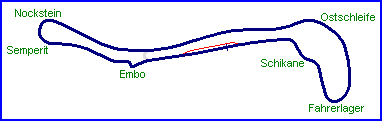
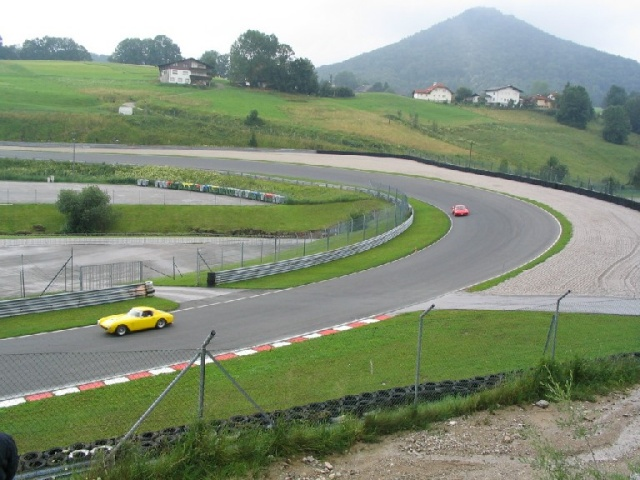
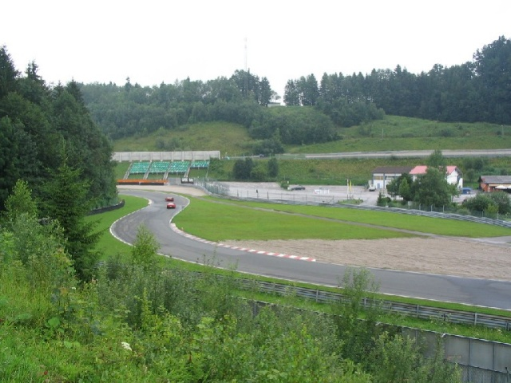
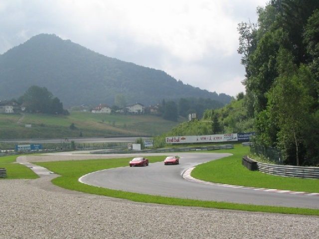
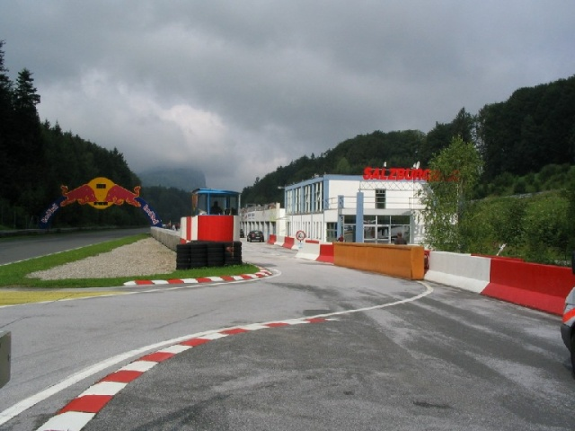
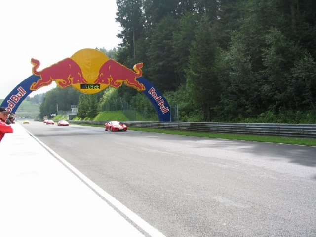
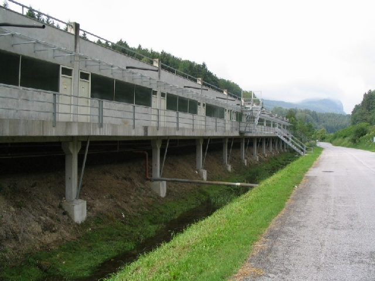

Salzburgring, Austria
Type: Permenant Road Course
Length: 2.644 Miles / 4.255 km
Photographs Taken: July 2004


The long corner at the entry of the circuit. You pass under a tunnel and so does the
river!

End of the schikane. Cars entering last turn.

Same place, looking back.

Pit entry

Main straight. Notice that there's no place for public in front of the pits. People must
keep in the infield. Grandstands are in the paddock, around the last corner.

Behind the pits. This track is built in a narrow valley where a river flows and every
place must be used. Poor views for the public.
Photographs & Text ©Michel Marti. Reproduced here with kind permission.